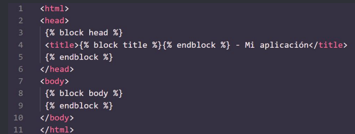

Resumen
1. Introducción a Flask
Es un microframework de Python para crear aplicaciones web, como páginas dinámicas y APIs
- En Flask trabajamos con sus módulos y bibliotecas de terceros
- Facilita la creación de aplicaciones web utilizando el patrón MVC, separando así la vista, del modelo de datos y de los controladores
- Al ser un microframework, es ideal para desarrollar una app básica o una de manera rápida y ágil
- Incluye un servidor web de desarrollo, no requiere de infraestructura extra para correrlo
- Tiene debugger y soporte para tests unitarios
- Es compatible con el protocolo WSGI (Web Server Gateway Interface), el cual es una convención de llamadas simple para que los servidores reenvíen solicitudes a apps hechas con Python
- Tiene un buen manejo de rutas a partir de su controlador
- La forma más conveniente de usar Flask es a través de entornos virtuales
- Un entorno virtual es una copia privada del intérprete de Python
- En este entorno podremos instalar paquetes de manera privada, sin afectar al intérprete de Python instalado en nuestro sistema
- Con los entornos virtuales podemos mantener un orden de nuestros paquetes y evitar conflictos con las versiones de Python de nuestro sistema
2. Estructura básica de una aplicación con Flask
- Todas las aplicaciones Flask deben crear una instancia de application
- El servidor web pasa todos los requests que recibe de los clientes a este objeto para su manejo, utilizando el protocolo WSGI
- WSGI (Web Server Gateway Interface) es una espespecificación de Python que describe cómo se comunica un server web con una app web
- La instancia de aplicación es un objeto de la clase Flask
- Así creamos la instancia de aplicación:
- Es necesario que le pasemos al constructor de clase un parámetro: el nombre del módulo principal de la aplicación
- Generalmente, se pasa __name__, una variable especial de Python, la cual se setea a main si el archivo fuente se ejecuta como programa principal. En cambio, si se ejecuta desde un módulo, se le setea el nombre de éste
- Los clientes (en nuestro caso, el browser) envían requests al server web, y éste los envía a la instancia de aplicación de Flask
- Esta instancia necesita saber qué código correr para cada URL solicitada, por lo cual tiene un mapeo de URLs a funciones Python
- Esta asociación entre la URL y la función que la maneja se conoce como route
- La manera más conveniente de definir una route en Flask es con el decorator app.route. Con esto se registra la función como un rout
- Con los decorators se cambia el comportamiento de una función. Comúnmente se utilizan para registrar funciones como handlers de un evento
- Por ejemplo
- En este ejemplo, estamos diciendo que la función index() como handler para la URL raíz de la app
- El valor de retorno de la función es la respuesta, lo que el cliente recibe
- Si el cliente es un browser, la respuesta es el documento que será mostrado al usuario
- Las funciones como index() se llaman funciones view o vista. Una respuesta que devuelve una función view puede ser una cadena con contenido HTML
- Observación: las cadenas embebidas en código Python son difíciles de mantener, no debe hacerse
- Hace algunas clases, vimos la estructura de una URL
- Entre sus partes, había una sección de variables o parámetros, por ejemplo “http://ejemplo.com/variable”
- Flask permite este tipo de URLs utilizando una sintaxis especial en el decorator del route:
- La parte entre <> es la parte dinámica, cualquier URL que coincida con la parte estática se mapea a la ruta
- Cuando la función vista se invoca, Flask envía el componente dinámico como argumento
- Por default se utilizan strings, pero también podemos colocar enteros, floats y paths como parte dinámica del route especificando el tipo de dato entre <> de la siguiente manera:
/example/
- Para correr el web server de desarrollo integrado de Flask, tenemos que invocarle el método run a nuestra instancia de application
- Así iniciamos el servidor, cuando se inicia, comienza un loop que espera requests y las atiende. Este loop se termina cuando detenemos la aplicación, con ctrl+c, por ejemplo
- Con esto, tenemos una primera aplicación en Flask
- Para ejecutar nuestra aplicación, tenemos que tener primero corriendo venv
- Luego le pasamos el comando py nombre_archivo.py
- Por último ingresamos a la url del servidor:
http : // 127.0.0.1:5000/
- Podemos escribir en la URL la ruta dinámica que escribimos anteriormente para saludar a alguien particularmente, pasándole el nombre por parámetro
3. Sobre el ciclo request-response
- Cuando Flask recibe un request de un cliente, necesita facilitarle a la función view ciertos objetos para manejarlo
- Un ejemplo de esto es el objeto request, el cual encapsula la request HTTP enviada por el cliente
- Para esto, Flask utiliza contexts para hacer que ciertos objetos sean temporalmente accesibles de manera global
- Por ejemplo, con el context del request podríamos acceder a alguno de sus encabezados, como los datos del navegador:
- Existen dos contextos en Flask: el application context y el request context
- Flask activa (o pushea) ambos contextos antes de despachar una request y luego los elimina cuando se maneja la request
- Cuando se pushea el contexto de application, las variables current_app y g se habilitan, idem con el contexto de request y las variables request y session
- Para poder utilizarlas, se deben importar
- Cuando una aplicación recibe un request de un cliente, debe encontrar la función a invocar para responderlo
- Para esto, Flask busca la URL dada en la request en el map de URL application, el cual contiene mapeos de URLs a las funciones view que las manejan
- Flask construye este mapa usando los decorators app.route
- A veces es necesario ejecutar código antes o después de que algún request se procese
- Por ejemplo, si queremos crear una conexión a una db, o autenticar el usuario que está haciendo la request
- En vez de duplicar código, con Flask podemos hacer que ciertas funciones se invoquen antes o después del dispatch de algún request a una función view
- Esto se logra con request hooks, los cuales se implementan como decorators
- Existen cuatro hooks en Flask:
● before_first_request: registra una función a ejecutar antes de que se ejecute la primer request
● before_request: registra una función a ejecutar antes de cada request
● after_request: registra una función a ejecutar después de cada request, si no hay excepciones sin manejar
● teardown_request: registra una función a ejecutar después de cada request, incluso si ocurren excepciones sin manejar
- Cuando Flask invoca una función view, espera que el valor de retorno sea la respuesta a la request
- En la mayoría de los casos, la respuesta es una simple string que se envía al cliente como una página HTML
- Pero el protocolo HTTP requiere más que eso como response. Por ejemplo, los códigos de estado
- Por defecto, Flask setea el código 200
- Cuando tenemos una función view que necesita responder con un código diferente, se puede añadir como segundo valor de retorno
Por Ejemplo:
- También puede devolverse un tercer parámetro, un diccionario de headers que se agregan a la response
- En vez de devolver 1, 2 o 3 valores como tupla, las funciones de Flask pueden devolver un objeto Response
- El método make_response() toma 1, 2 o 3 parámetros y devuelve un objeto Response
Por Ejemplo:
- Existe un tipo especial de response llamado redirect
- Esta respuesta no incluye una página, sólo devuelve al browser una nueva URL de donde cargar la nueva página
- Usualmente se utilizan estas redirecciones en formularios web
- Generalmente se indica una redirección con un 302, y una URL para redirigir a cierto Location header
Por Ejemplo:
- También existe la función abort, utilizada para el manejo de errores:
4. Templates con Jinja2
- Los ejemplos que vimos hasta ahora manejaban datos y las visualizaciones de ellos
- Es sabido que, mezclar lógica de presentación y lógica de negocio, deriva en código difícil de mantener y difícil de entender
- Lógica de presentación: parte de la app que maneja los inputs de usuario y le presenta los outputs
- Lógica de negocio: son las reglas del mundo real o algoritmos de la app que se encargan del intercambio de información entre la interfaz y la base de datos
- La idea es separar estas dos capas para poder hacer que nuestro código sea más mantenible
- Para esto, vamos a mover toda la lógica de presentación a templates
- Un template es un archivo que contiene el texto de una respuesta, y variables declaradas para aquellos datos dinámicos que sólo son conocidos en el contexto de una request
- La acción de reemplazar estas variables por valores reales y devolver una string de respuesta se llama rendering
- Para renderizar templates, Flask usa Jinja2
- Jinja2 es un motor de templates
- Un template de Jinja2 es básicamente un archivo que contiene el texto de una respuesta
- Anteriormente vimos un ejemplo que contenía un h1 que mostraba ‘Hola Mundo’ en el browser, la idea es mover ese elemento HTML a un template de Jinja2
- Para renderizar templates, por defecto, Flask los busca en una subcarpeta templates, dentro de la carpeta de la aplicación
- La función render_template de Flask integra el motor de Jinja2 con la aplicación
- Como primer parámetro, recibe el nombre del archivo del template
- Como segundo parámetro, puede recibir datos para las variables dinámicas
- {{ nombre }} hace referencia a una variable declarada, con esa sintaxis le decimos al motor que el valor que va ahí debe ser obtenido de los datos que se enviaron al momento de renderizar el sitio
- Jinja2 reconoce cualquier tipo de variable, incluso diccionarios, listas y objetos
- Las variables también pueden ser alteradas con filters
- Estos filters se agregan seguido del nombre de la variable, con un | de por medio
- Algunos filtros de Jinja2:
- Es importante aclarar que Jinja2, por defecto, aplica escaping a todas las variables por seguridad
- Esto es, si tenemos un Hola
, Jinja2 lo va a renderizar como <h1>Hola</h1> lo cual el browser no podrá interpretar
- Muchas veces hay que mostrar datos almacenados en variables, en estos casos usaremos safe
- Observación: no usar safe en valores no confiables, como inputs de usuario
- Existen muchos más filters de Jinja2 que podemos consultar en Google
- Jinja2 ofrece estructuras de control que pueden alterar el flujo de nuestro template
- Por ejemplo, podemos condicionarlo:
- También podríamos renderizar una lista de elementos:
- Otra herramienta interesante de Jinja2 es la herencia de templates
- (Si conocen en profundidad el paradigma de objetos, es similar a la herencia de clases)
- Primero, tendremos un template base o padre, base.html

- Las etiquetas block definen elementos que un template hijo puede modificar
- En el ejemplo anterior, hay blocks head, title y body
- Para heredar este template, el template hijo debe usar la directiva extends seguido de base.html
- Luego se redefinen los blocks
- También se pueden mantener los blocks del template padre con super()
- Por ejemplo, este sería un template hijo.html en el cual estamos redefiniendo todos los blocks del padre, excepto el block head, que lo hereda del template base